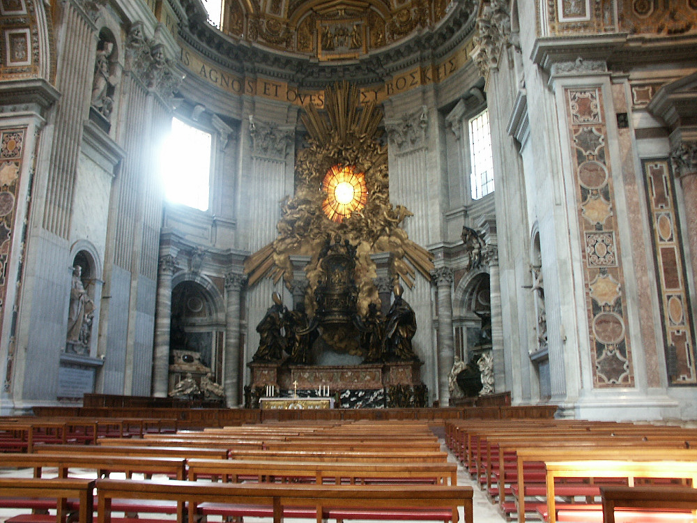

Johnnie and Oberta Baker's Photo Album Previous Gallery Next
|

This structure is a brilliant creation by Bernini, designed to display the chair on which, according to ancient tradition, St. Peter sat and taught Roman Christians. The fine alabaster window, surrounded by golden clouds and angels flying between rays of light, casts a mystical, warmth through the basilica, especially in the afternoon. It is divided into twelve sections, in homage to the twelve Apostles who carried the words of the Gospel throughout the world. |